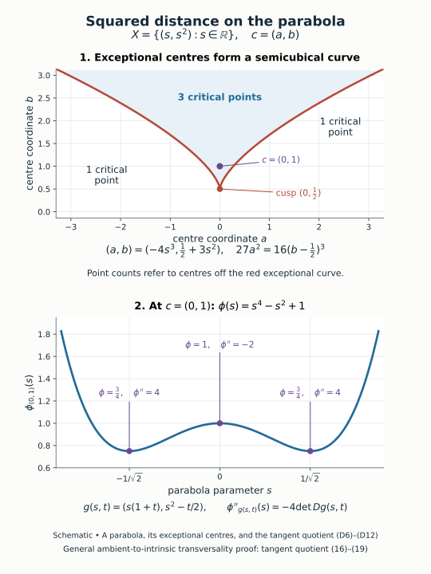

Generic squared distance and cotangent transversality
A function can detect a sheaf's directional changes through the intersection of its differential graph with a cotangent support. We want those intersections to avoid singular cotangent pieces and to be transverse on the smooth part. For a closed analytic submanifold of Euclidean space, generic squared-distance functions have precisely this property. Their properness also keeps each bounded sublevel calculation finite.
Let \(X\subset\mathbb R^N\) be a closed analytically embedded submanifold of dimension \(n\). Manifolds are finite-dimensional, Hausdorff and countable at infinity. Let \(\Lambda\subset T^*X\) be closed, positive-conic, subanalytic and isotropic. Suppose \(\Lambda_0\subset\Lambda\) is a subanalytic analytic submanifold of dimension \(n\), with
\[ \dim(\Lambda\setminus\Lambda_0)<n. \tag{1} \]The submanifold \(\Lambda_0\) need not be declared equal to the whole regular locus. Its smoothness, dimension and the bound on its residual complement are the exact assumptions we use. No compactness of \(X\) is assumed.
We use the local subanalytic set calculus, singular one-form pullback and union rules, cotangent restriction and its canonical-form identity, and regular dimension parts and strict singular dimension drop. The analytic critical-value theorem, including its lower-dimensional image estimate (A2), supplies the null-set arguments. Countable atlases and the stated analytic inverse, implicit-function and constant-rank inputs are prerequisites. Schapira–Tose's Morse Inequalities for R-constructible Sheaves, §3, pp. 6–8, applies compact lower sublevels on the sheaf support and transverse cotangent intersections to Morse inequalities. The generic-center existence and ambient-to-intrinsic comparison are proved below.
Programme exposition: CC0. Reconstructed and checked by GPT-6 Astra (OpenAI), Ultra, October 2026, preserving the mathematical scope of the earlier GPT-6.1 Sol lesson.
The precise generic statement
For a center \(c\in\mathbb R^N\), define
\[ \varphi_c:X\longrightarrow\mathbb R, \qquad \varphi_c(x)=|x-c|^2, \qquad \Gamma_c=\{(x;d\varphi_c(x)):x\in X\}\subset T^*X. \tag{2} \]Generic squared-distance theorem. Outside a set of Lebesgue measure zero of centers \(c\),
\[ \Gamma_c\cap\Lambda\subset\Lambda_0, \qquad \Gamma_c\text{ and }\Lambda_0\text{ meet transversely}. \tag{3} \]Here transversality is at their intersection points. Every \(\varphi_c\) is proper. For a center satisfying (3), the cotangent intersection is closed and discrete, with only finitely many base points in any bounded sublevel of \(\varphi_c\).
The allowable centers form a dense set of full measure. Openness of that set is not part of the statement; the examples below show both finite limits of the nonclosed residual and critical points escaping to infinity.
Lifting intrinsic covectors to ambient covectors
Put
\[ E=T^*\mathbb R^N|_X, \qquad q:E\longrightarrow T^*X, \qquad q(x;\xi)=(x;\xi|_{T_xX}), \tag{4} \]and let \(j:E\hookrightarrow T^*\mathbb R^N\) be the inclusion. The map \(q\) is an analytic surjective vector-bundle map with kernel rank \(r=N-n\). In a local analytic splitting, it is the projection
\[ T^*X|_U\times\mathbb R^r\longrightarrow T^*X|_U. \tag{5} \]Define the ambient lifts
\[ \widetilde\Lambda=j(q^{-1}\Lambda),\qquad \widetilde\Lambda_0=j(q^{-1}\Lambda_0). \tag{6} \]The first is closed in \(T^*\mathbb R^N\). Indeed, \(E\) is closed there because its base \(X\) is closed; \(q^{-1}\Lambda\) is closed in \(E\). Both lifts are subanalytic by analytic inverse image and the closed analytic inclusion of \(E\): locally its base is given by analytic coordinate equalities. Positive conicity of \(\widetilde\Lambda\) follows from conicity of \(\Lambda\) and the fibre-linear \(q\). The chosen smooth part \(\Lambda_0\) need not itself be conic.
The canonical forms satisfy
\[ j^*\alpha_{\mathbb R^N}=q^*\alpha_X. \tag{7} \]At \((x;\xi)\in E\), both sides evaluate a tangent vector with base component \(v\in T_xX\) as \(\xi(v)\). The singular one-form pullback calculus and isotropy of \(\Lambda\) therefore show that \(\widetilde\Lambda\) is isotropic.
The splitting (5) supplies the dimensions as well as subanalyticity. It makes \(q^{-1}\Lambda_0\) a smooth manifold of dimension \(n+r=N\). For any subanalytic set \(B\subset T^*X\), the same local product gives \(\dim q^{-1}B=\dim B+r\), whenever \(B\) is nonempty. This follows by taking its fixed-dimensional regular parts; product with \(\mathbb R^r\) increases their dimensions by \(r\), while the singular remainder has smaller dimension. In particular,
\[ \dim\bigl(\widetilde\Lambda\setminus\widetilde\Lambda_0\bigr) \le (n-1)+(N-n)=N-1. \tag{8} \]The residual can be nonclosed. Formula (8) is a dimension assertion about that actual residual, without replacing it by an unspecified larger set.
If the ambient dimension is zero, the embedding is empty or consists of the single point of the zero-dimensional Euclidean space. The residual is empty by (1), every differential into a zero tangent space is onto, and every claimed intersection is transverse and finite. Thus the following measure argument is only needed in positive ambient dimension.
Centers are values of one ambient map
Identify ambient covectors with vectors using the Euclidean metric and set
\[ g:T^*\mathbb R^N\longrightarrow\mathbb R^N, \qquad g(x;\xi)=x-\xi/2. \tag{9} \]This is a submersion: its derivative in the base direction is the identity. For a center \(c\),
\[ g^{-1}(c)=\{(x;2(x-c)):x\in\mathbb R^N\}, \tag{10} \]the differential graph of the ambient squared-distance function. Thus a transverse graph intersection can be found by choosing a regular value of \(g\) restricted to \(\widetilde\Lambda_0\), while also avoiding values from the residual.
Let
\[ R=\widetilde\Lambda\setminus\widetilde\Lambda_0, \qquad C=\{p\in\widetilde\Lambda_0: dg_p|_{T_p\widetilde\Lambda_0}\text{ is not surjective}\}. \tag{11} \]Both \(g(R)\) and \(g(C)\) have Lebesgue measure zero. The analytic critical-value theorem, (A1)–(A8), applies to the critical values \(g(C)\) of the analytic map on \(\widetilde\Lambda_0\). The domain and map are real analytic, and the domain has a countable atlas. Its proof uses analytic Taylor expansion, the implicit-function and constant-rank theorems, elementary measure estimates and countable charts; it does not use the cotangent transport or stratification results of this lesson. We give the residual argument separately.
Decompose \(R\) into the parts of each fixed dimension of its regular locus, then repeat on its subanalytic singular remainder. Strict singular dimension drop ends this process after finitely many dimension rounds. Every resulting smooth part has dimension at most \(N-1\) by (8). In each chart its map to \(\mathbb R^N\) has source dimension strictly less than \(N\) and is continuously differentiable. On compact coordinate boxes it is Lipschitz, and the cube-cover estimate in Step A.1, formula (A2) makes its image measure zero. Exhausting each chart by such boxes preserves nullity. Countable atlases cover these manifolds, including any countably many components. A countable union of these null images is null, proving the claim for \(g(R)\).
Choose
\[ c\in\mathbb R^N\setminus\bigl(g(R)\cup g(C)\bigr). \tag{12} \]Every open ball has positive measure, so such centers exist in every open ball. We used these images only for null-set avoidance, without claiming that the nonproper map \(g\) makes them subanalytic or closed.
At an intersection \(p\in\widetilde\Lambda\cap g^{-1}(c)\), (12) gives \(p\in\widetilde\Lambda_0\) and surjectivity of \(dg_p\) on its tangent space. Since \(T_pg^{-1}(c)=\ker dg_p\), it follows that
\[ T_p\widetilde\Lambda_0+T_pg^{-1}(c) =T_p(T^*\mathbb R^N). \tag{13} \]For clarity, the linear algebra here is exact: given any ambient tangent vector \(v\), choose \(a\in T_p\widetilde\Lambda_0\) with \(dg_p(a)=dg_p(v)\). Then \(v-a\in\ker dg_p\). This proves ambient transversality.
Transversality descends through cotangent restriction
Restrict the ambient differential section to \(X\):
\[ \psi_c:X\longrightarrow E, \qquad \psi_c(x)=(x;2(x-c)). \tag{14} \]The chain rule gives
\[ q\circ\psi_c:x\longmapsto(x;d\varphi_c(x)). \tag{15} \]Therefore \(\psi_c\) gives a bijective correspondence between the base points of \(\Gamma_c\cap\Lambda\) and the points of \(g^{-1}(c)\cap\widetilde\Lambda\). Equation (12) already proves the first inclusion in (3).
We must also prove intrinsic transversality; the ambient result alone is not a substitute for that comparison. At a corresponding point \(p\in E\), write
\[ V=T_p(T^*\mathbb R^N),\quad W=T_pE,\quad A=T_p\widetilde\Lambda_0,\quad B=T_pg^{-1}(c). \tag{16} \]We have \(A\subset W\). The base projection maps \(B\) isomorphically to \(T_x\mathbb R^N\), while \(W\) has base components in \(T_xX\). Thus \(B+W=V\). In this situation,
\[ A+B=V\quad\Longleftrightarrow\quad A+(B\cap W)=W. \tag{17} \]For the forward implication, write any \(w\in W\) as \(a+b\), where \(a\in A\subset W\); then \(b=w-a\in B\cap W\). For the reverse implication, combine \(B+W=V\) with the right side of (17).
The surjective differential \(dq_p:W\to T_{q(p)}(T^*X)\) has kernel contained in \(A\): the entire \(q\)-fibre over a point of \(\Lambda_0\) lies in \(q^{-1}\Lambda_0\). The submersion description (5) gives
\[ dq_p(A)=T_{q(p)}\Lambda_0, \qquad dq_p(B\cap W)=T_{q(p)}\Gamma_c. \tag{18} \]The second equality follows from (14)–(15): \(B\cap W\) is the tangent of the ambient section restricted to \(X\). Quotienting (17) by \(\ker dq_p\subset A\) now yields
\[ A+B=V\quad\Longleftrightarrow\quad T_{q(p)}\Lambda_0+T_{q(p)}\Gamma_c =T_{q(p)}(T^*X). \tag{19} \]Apply (13). The right side of (19) is exactly the intrinsic transversality in (3). The restriction map retains the geometry of the embedding; no equality of ambient and intrinsic Hessians has been assumed. This completes the generic-intersection proof.
Properness and finite sublevel intersections
For every \(c\) and \(b\ge0\),
\[ \{x\in X:\varphi_c(x)\le b\} =X\cap\overline{B(c,\sqrt b)}. \tag{20} \]It is compact, since \(X\) is closed in \(\mathbb R^N\). The function is nonnegative, so every inverse image of a compact subset of \(\mathbb R\) is a closed subset of one of these compact sublevels. Hence \(\varphi_c\) is proper.
For a center satisfying (3), the smooth \(n\)-dimensional \(\Gamma_c\) and \(\Lambda_0\) meet transversely in a \(2n\)-dimensional manifold, so their intersection is discrete. Its equality with \(\Gamma_c\cap\Lambda\) makes it closed, because both \(\Lambda\) and the differential graph are closed. The graph is homeomorphic to \(X\), so the intersection's base points form a closed discrete subset of \(X\). A compact sublevel can meet that subset only finitely many times: otherwise compactness would give an accumulation point in the subset, contradicting discreteness. This proves the finiteness assertion.
If \(\Lambda\) is the zero section, the intersection bases are precisely ordinary critical points of \(\varphi_c\). In coordinates at a critical point, the tangent to its differential graph is
\[ \{(v;\operatorname{Hess}(\varphi_c)v):v\in T_xX\}, \tag{21} \]while the tangent to the zero section is \(\{(v;0)\}\). Their transversality is equivalent to invertibility of the intrinsic Hessian. Thus the theorem includes ordinary proper Morse squared-distance functions. For a general \(\Lambda\), the cotangent intersections test that chosen support; they need not coincide with the ordinary critical points.
Exercises with complete solutions
Two extrema on a circle
Difficulty: Introductory.
Take \(X=S^1\subset\mathbb R^2\) and \(\Lambda\) its zero section. For every nonzero center \(c\), compute the critical points and Hessians of \(\varphi_c\). What happens when \(c=0\)?
Solution. Rotate the parameter so that \(c=(\rho,0)\), \(\rho=|c|>0\), and \(x(\theta)=(\cos\theta,\sin\theta)\). Then
\[ \varphi_c(\theta)=1+\rho^2-2\rho\cos\theta, \qquad \varphi_c'(\theta)=2\rho\sin\theta, \qquad \varphi_c''(\theta)=2\rho\cos\theta. \tag{22} \]The two critical points are \(\theta=0,\pi\), with nonzero Hessians \(2\rho,-2\rho\). They are respectively the nearest and farthest points of the circle from \(c\). Their zero-section intersections are transverse by (21). At \(c=0\), the restriction is the constant function one; every point is critical and its Hessian is zero. This is the exceptional center in this example. All the functions are proper because the circle is compact, although the general theorem allows noncompact closed \(X\).
Cotangent intersections need not be ordinary critical points
Difficulty: Intermediate.
Let \(X=\mathbb R\) and \(\Lambda=\Lambda_0=T_0^*\mathbb R\). For \(\varphi_c(x)=(x-c)^2\), compute the cotangent intersection and prove transversality for every \(c\). Compare its base with the ordinary critical point.
Solution. The differential graph is \(\xi=2(x-c)\). The vertical conormal fibre has \(x=0\), so the sole intersection is
\[ (x;\xi)=(0;-2c). \tag{23} \]The vertical tangent is spanned by \((0,1)\), and the tangent to the graph is spanned by \((1,2)\). These vectors span \(\mathbb R^2\), proving transversality for every center, including \(c=0\). The ordinary critical point is \(x=c\). It is different from the support-intersection base zero unless \(c=0\). The fibre \(\Lambda\) is closed conic subanalytic isotropic and smooth of dimension one, with empty residual; it satisfies every theorem hypothesis.
The ambient lift of a curved zero section
Difficulty: Intermediate.
For \(X=S^1\subset\mathbb R^2\), describe the lift of the intrinsic zero section under (4). Compute \(g\) on that lift and its critical points. Relate the resulting critical values to the first exercise.
Solution. An ambient covector restricts to zero on the tangent to the circle precisely when its Euclidean vector is a multiple of the unit normal \(x\). Thus the lift is parametrized by
\[ (\theta,a)\longmapsto(x(\theta);a\,x(\theta)), \qquad g=(1-a/2)x(\theta). \tag{24} \]It has dimension \(n+(N-n)=1+1=2=N\). The two differential columns of \(g\) are \((1-a/2)x'(\theta)\) and \(-x(\theta)/2\). The radial and tangential unit vectors are independent, so rank is two unless \(a=2\). At \(a=2\) the rank is one and \(g=0\). Thus the only critical value is the zero center. Avoiding it gives the two nondegenerate circle extrema already calculated. This lift retains the varying tangent plane through the restriction map rather than treating the circle as a fixed linear subspace.
Residual dimension after an ambient lift
Difficulty: Advanced.
Suppose \(X\) has dimension two in \(\mathbb R^5\), and a subanalytic residual \(R\subset T^*X\) has dimension at most one. Determine the maximum dimension of its ambient cotangent lift and prove its image under \(g\) has five-dimensional measure zero. Explain why no properness of \(g\) is needed.
Solution. The restriction kernel has rank \(5-2=3\). In an analytic local splitting, the inverse image is \(R\times\mathbb R^3\), so the lift has dimension at most four. Decompose it through regular parts and lower-dimensional singular remainders. Every smooth part has dimension at most four and a countable atlas. On every compact coordinate box the restricted map into \(\mathbb R^5\) is Lipschitz. The lower-dimensional cube-cover estimate in Step A.1, formula (A2) in the analytic critical-value proof makes each such image measure zero; compact exhaustion, the finite number of dimension rounds and countably many charts preserve that conclusion under their union.
This argument controls measure, rather than obtaining a subanalytic-image statement through properness. We only need to choose a center outside the image. If \(g\) has noncompact fibres or its image accumulates from infinity, the null-set calculation still applies and no unsupported closedness or subanalyticity claim is required.
Closedness of the embedding supplies properness
Difficulty: Intermediate.
Compare squared distance on \(X=\mathbb R\subset\mathbb R\) with its restriction to the analytically embedded open interval \(X=(0,1)\subset\mathbb R\), using center zero. Show that the latter fails properness, even though its differential graph is smooth. Prove why closed discrete support intersections are finite on compact sublevels.
Solution. On \(\mathbb R\), the sublevel of \(x^2\) below \(b\ge0\) is the compact interval \([-\sqrt b,\sqrt b]\). On \((0,1)\), the inverse image of the compact target interval \([0,1]\) is all of \((0,1)\), which is not compact in that manifold. For example, the sequence \(x_j=1/j\), \(j\ge2\), has no limit in it. The open interval has lost the closed-embedding hypothesis in (20), so the properness conclusion does not apply.
For the finiteness assertion, let \(D\) be the closed discrete subset of intersection bases for an allowed center, and let \(K\) be a compact sublevel. If \(D\cap K\) were infinite, a sequence of distinct points would have a convergent subsequence in \(K\). Its limit lies in \(D\) by closedness, while distinct points approach it, contradicting discreteness. Both closedness and discreteness are used here.
Verifying the tangent quotient comparison
Difficulty: Advanced.
Let \(V\) be a vector space, \(A\subset W\subset V\), and \(B\subset V\), with \(B+W=V\). Let \(q:W\to Q\) be surjective with \(\ker q\subset A\). Prove
\[ A+B=V\quad\Longleftrightarrow\quad q(A)+q(B\cap W)=Q. \tag{25} \]Apply the statement to (16) and account for every required hypothesis.
Solution. As in (17), the first equality is equivalent to \(A+(B\cap W)=W\). If this equality holds, apply \(q\) to obtain the equality in \(Q\). Conversely, given that equality in \(Q\), write \(q(w)=q(a)+q(b)\), where \(a\in A\) and \(b\in B\cap W\). Then \(w-a-b\in\ker q\subset A\), so \(w\in A+(B\cap W)\). This proves the equivalence.
In the geometric application, \(A=T_p\widetilde\Lambda_0\) lies in \(W=T_pE\). The ambient graph tangent \(B\) projects isomorphically to all ambient base directions, so \(B+W=V\). The restriction map is a bundle submersion, making \(dq\) surjective, and its kernel is tangent to a full fibre of \(q^{-1}\Lambda_0\), so it is contained in \(A\). Its two images are precisely \(T\Lambda_0\) and \(T\Gamma_c\) by (18). Consequently ambient transversality is equivalent to the intrinsic transversality required by the theorem.
The next use of these functions
Generic squared distance gives proper functions with finitely many relevant cotangent intersections on each bounded sublevel. Together with the μ-stratification and its closed total conormal set, this is the geometric preparation for local constancy along strata, constructibility criteria and later Morse and index calculations. Those sheaf-theoretic conclusions require their own coefficient, boundedness and functorial arguments.
Residual limits and curvature in exact models
A residual whose missing limit is an allowed centre
Difficulty: Advanced.
Let \(X=\mathbb R^2\), write covectors as \(\xi\,dx+\eta\,dy\), and define
\[ \Lambda=0_X\ \cup\ \{(0,0;\xi,0):\xi\in\mathbb R\}, \qquad \Lambda_0=0_X. \tag{D1} \]Determine the exact allowed centres of the squared-distance theorem. Explain why replacing the residual by its closure changes the exceptional set.
Solution. The two pieces are closed algebraic, positive-conic and isotropic: the canonical one-form is zero on the zero section and on every vertical fibre. Their finite union retains these properties. The zero section \(\Lambda_0\) is a two-dimensional analytic manifold, whereas
\[ R=\Lambda\setminus\Lambda_0 =\{(0,0;\xi,0):\xi\ne0\},\qquad \dim R=1<2. \tag{D2} \]This residual is not closed. In this example the ambient lift is the identity. The map \(g(x,y;\xi,\eta)=(x-\xi/2,y-\eta/2)\) restricts to the identity on \(\Lambda_0\), so it has no critical points there. On the residual it gives
\[ g(R)=\{(a,0):a\ne0\}. \tag{D3} \]Directly, the differential graph is \((x,y;2(x-a),2(y-b))\) for centre \(c=(a,b)\). It meets \(\Lambda_0\) exactly at \((a,b;0,0)\), always transversely, since the Hessian is \(2I\). It meets the residual exactly when \(b=0\) and \(a\ne0\), at the additional point \((0,0;-2a,0)\). Thus the exact allowed set is
\[ \{(a,b):b\ne0\}\ \cup\ \{(0,0)\}. \tag{D4} \]It is dense and has full measure, but it is not open at the origin. Closing \(R\) would add the zero covector above the origin, so \(g(\overline R)\) would also exclude the allowed centre \(c=0\). This computation explains the insistence on the actual residual in (8) and (11). It also demonstrates why \(\Lambda_0\) is permitted to contain a point singular in the total set \(\Lambda\): \(\Lambda_0\) itself remains a smooth analytic submanifold. Nonopenness can therefore arise from finite residual limits, in addition to escape to infinity.
The curvature term retained by cotangent restriction
Let \(r:U\subset\mathbb R^n\to X\subset\mathbb R^N\) be an analytic coordinate parametrization. Direct differentiation gives
\[ \partial_i\phi_c=2\langle r-c,\partial_i r\rangle, \qquad \partial_i\partial_j\phi_c =2\langle\partial_i r,\partial_j r\rangle +2\langle r-c,\partial_i\partial_j r\rangle. \tag{D5} \]At a critical point the first derivatives vanish, so the second-derivative matrix represents the intrinsic Hessian independently of the chosen coordinates: in the second-derivative coordinate-change rule, the extra term is multiplied by the first derivative. The first term in (D5) is the restriction of the ambient Hessian \(2I\); the second term records curvature of the embedding. The quotient argument (16)–(19) keeps both terms. It does not identify the intrinsic Hessian with the first term alone.
A parabola, its exceptional centres, and the tangent quotient
Difficulty: Advanced.
Take \(X=\{r(s)=(s,s^2):s\in\mathbb R\}\) with its intrinsic zero section \(\Lambda=\Lambda_0\). Compute the critical values of the ambient centre map and check their equivalence with degeneracy of the intrinsic squared-distance Hessian. Determine the critical points for \(c=(0,1)\).
Solution. The parabola is a closed analytic embedding, so every squared distance on it is proper. An ambient covector restricting to zero on \(T_{r(s)}X\) is exactly \(t(-2s,1)\), where \(t\in\mathbb R\). Consequently its ambient lift and centre map are
\[ \widetilde\Lambda =\{(s,s^2;-2st,t):s,t\in\mathbb R\}, \qquad g(s,t)=\bigl(s(1+t),\ s^2-t/2\bigr). \tag{D6} \]In the parameter order \((s,t)\) and centre coordinates \((a,b)\),
\[ Dg= \begin{pmatrix}1+t&s\\2s&-1/2\end{pmatrix}, \qquad \det Dg=-\frac{1+t+4s^2}{2}. \tag{D7} \]Its critical locus is \(t=-1-4s^2\), and its critical values form the semicubical curve
\[ (a,b)=\bigl(-4s^3,\tfrac12+3s^2\bigr), \qquad 27a^2=16(b-\tfrac12)^3. \tag{D8} \]Conversely each real point satisfying the displayed equation has \(b\ge1/2\) and a unique real \(s\) with \(a=-4s^3\), which then satisfies \(b=1/2+3s^2\); thus the equation describes exactly this curve.
Intrinsic differentiation gives
\[ \begin{aligned} \phi_{(a,b)}(s)&=s^4+(1-2b)s^2-2as+a^2+b^2,\\ \phi'_{(a,b)}(s)&=4s^3+2(1-2b)s-2a,\\ \phi''_{(a,b)}(s)&=12s^2+2-4b. \end{aligned} \tag{D9} \]When \((a,b)=g(s,t)\), the first derivative vanishes and
\[ \phi''_{g(s,t)}(s)=2(1+t+4s^2)=-4\det Dg(s,t). \tag{D10} \]Thus the same point is regular for the ambient centre map exactly when its intrinsic critical point is nondegenerate. Formula (D10) makes (19) explicit, including the embedding's curvature contribution in (D5).
For \(c=(0,1)\), \(\phi(s)=s^4-s^2+1\). Its three critical points are
\[ s=0:\ \phi=1,\ \phi''=-2;\qquad s=\pm 1/\sqrt2:\ \phi=3/4,\ \phi''=4. \tag{D11} \]They are one maximum and two minima, all nondegenerate. At the cusp centre \((0,1/2)\), by contrast, \(\phi(s)=s^4+1/4\), so the critical point at zero is degenerate.
The number of critical points away from (D8) can be checked without a cubic formula. Put \(h=b-1/2\); the critical-point equation is \(P(s)=2s^3-2hs-a=0\). If \(h\le0\), it has one real root, nondegenerate off the cusp. If \(h>0\), its turning points are \(\pm\sqrt{h/3}\). Their values are \(4(h/3)^{3/2}-a\) and \(-4(h/3)^{3/2}-a\). There are three distinct real roots exactly when
\[ h>0,\qquad 27a^2<16h^3; \tag{D12} \]otherwise there is one off the exceptional curve. The signs of \(\phi''\) alternate \(+,-,+\) at the three ordered roots. This proves the critical-point counts displayed in the figure.

Figure. Schematic of the exact exceptional-centre curve (D8), with the one- and three-critical-point regions proved in (D12), and the squared-distance graph for \(c=(0,1)\). The marked extrema have the exact positions, values and Hessians in (D11). The identity (D10) checks the passage from the ambient lift to intrinsic transversality. Proof: “A parabola, its exceptional centres, and the tangent quotient”; general quotient argument: (16)–(19).
Globally infinite but sublevel-finite intersections
Let \(X\subset\mathbb R^2\) be the union of the circles with centres \(c_j=(1/j,0)\) and radii \(j^2\), for integers \(j\ge1\). They are disjoint: consecutive radii differ by at least three, while the distance between any two centres is less than one. They are locally finite because every point on the \(j\)-th circle has norm at least \(j^2-1/j\to\infty\). Hence their union is closed, and near each point it is a single embedded analytic circle. The zero section is a closed subanalytic smooth one-dimensional \(\Lambda=\Lambda_0\).
For any centre \(c\ne c_j\) for every \(j\), squared distance has two nondegenerate critical points on each circle. Indeed, with radius \(R=j^2\), write the displacement \(c-c_j=\rho(\cos\theta_0,\sin\theta_0)\), where \(\rho>0\). Then
\[ \phi_c(\theta)=R^2+\rho^2-2R\rho\cos(\theta-\theta_0), \qquad \phi_c''(\theta_0)=2R\rho, \quad \phi_c''(\theta_0+\pi)=-2R\rho. \tag{D13} \]At \(c=c_j\), the function is constant on the \(j\)-th circle and is not Morse. In particular, \(c=0\) is an allowed centre approached by the excluded centres \(c_j\). It has infinitely many critical points globally but only finitely many in each bounded sublevel: a sublevel lies in a bounded ambient ball, which meets only finitely many circles. This realizes exactly the lesson's local finiteness conclusion and exhibits nonopenness caused by critical points escaping to infinity, separately from the finite residual-limit phenomenon in (D1)–(D4).
Sources and exact scope
Schapira and Tose, Morse Inequalities for R-constructible Sheaves, Advances in Mathematics 93 (1992), pp. 1–8, §3, pp. 6–8, conditions (3.1)–(3.3), use compact lower sublevels on the sheaf support, avoidance of singular cotangent pieces and transverse smooth intersections for a Morse calculation. Their Remark 3.2 relates conormal transversality to the Hessian on a stratum, and Example 3.3 uses a squared-distance function. Those passages motivate the geometric conditions here; they do not provide the generic-center existence proof above. The paper imposes finite intersections for its stated application, whereas our noncompact conclusion is finite intersections on each compact sublevel.
Our proof is organized around the center map, its two exceptional images and the exact tangent quotient. It includes the residual dimension calculation, the curved normal-bundle model, the vertical-support distinction and the failed-properness example. The analytic critical-value theorem is the input used above. A separate smooth critical-value proof gives the smooth-map version, including the local inverse and compact-slice arguments and the countable-at-infinity scope bridge.